[FACULTY GUIDE NAME]
[DESIGNATION]
[DEPARTMENT]
[STUDENT NAME]
[REGISTER NUMBER]
[PROGRAMME AND YEAR]
Team projects are widely used to build collaboration skills, but they make individual effort hard to observe. Members who contribute less than their share while benefiting from the group result are described as free-riders or social loafers [1], [2]. A meta-analysis found that reduced individual effort in groups is a robust effect and proposed a collective effort model to explain it [3], and studies of group projects report that non-contribution has causes beyond simple loafing [4]. The usual remedy is peer assessment near the end of a project, when it can no longer change how the work was done.
Learning platforms already record who completed tasks, edited documents, committed code and took part in discussion. Learning analytics aims to turn such records into evidence that can support teaching decisions [5]. A continuous estimate of effort would let a faculty member intervene while there is still time, and would give students concrete feedback before grades are decided.
Given a student's recorded activity over the last seven days, estimate the probability that the student is contributing at the free-riding end of the range, and expose that probability to the rest of the system as one input to an explainable decision. The estimate must be fast enough to be requested on demand, must degrade gracefully when unavailable, and must leave the final judgement to faculty.
Educational data mining has mostly predicted overall performance or dropout [6], [7], not in-project effort. For small tabular data, studies report that tree ensembles are often as good as or better than deep networks [8], [9], so a neural model needs to be compared with simple baselines rather than assumed to be superior. No public labelled dataset of team free-riding is available to the authors, which makes honest reporting of what simulated evaluation can and cannot show part of the problem.
The project uses a small feed-forward ANN trained on simulated activity records. The network is deployed as a microservice and consulted by a Risk Agent that fuses its output with three rule-based agent scores. The study evaluates the network on held-out data, retrains it under several random seeds, compares it with classical models and with the labelling rule, probes its behaviour with perturbations, and tests the running service.
This report covers only the ANN component. The surrounding platform (web interface, rule-based agents, assignment workflow, academic-risk model) is described only as context. All training and evaluation data is simulated. Claims are classified as shown in Table I; the same classes are used throughout.
| Class | Meaning | Examples in this report |
|---|---|---|
| Verified implementation | Supported by code and by checks executed for this report | Network, training script, service, integration, fallback, UI display, exact metric reproduction |
| Simulated results | Produced from the simulator or from demonstration data | Dataset, labels, every accuracy, AUC and calibration figure, demonstration students |
| Planned or claimed | Described in project notes but not verified here | Training on real labels, automated retraining, calibration, production deployment, fairness audit |
Section II reviews related work. Sections III to V formulate the problem, describe the architecture and the methodology. Sections VI and VII cover implementation and workflow. Sections VIII and IX present the evaluation design and results, and Section X the testing. Sections XI to XIII describe the interface, security and deployment. Sections XIV to XVII give the discussion, limitations, future work and conclusion.
Kerr and Bruun showed that members reduce effort when their contribution seems dispensable [1], and Latané et al. described social loafing as reduced individual effort in groups [2]. Karau and Williams synthesised the literature in a meta-analysis [3]. Hall and Buzwell argued that free-riding in student projects has several causes, which matters for how an alert should be phrased [4]. These works motivate detection but do not provide an automated, continuous measure.
Romero and Ventura reviewed educational data mining methods and applications [6]. Cortez and Silva predicted secondary-school performance with several data-mining models, including neural networks, on school records [7]. Siemens and Long framed learning analytics as the use of learner data to inform decisions [5]. This project applies a similar supervised pattern, but to a within-project effort signal.
Multilayer networks trained by back-propagation [10] can approximate a wide class of functions [11]. On tabular data, however, Shwartz-Ziv and Armon found that tree-based models matched or exceeded recent deep models on several datasets [8], and Grinsztajn et al. reported that tree-based models remain strong on medium-sized tabular data [9]. Random forests [12] are one such baseline. The comparison in Section IX follows this advice by testing the network against classical models.
The network uses rectified linear units [13], Glorot-style weight initialisation [14], the Adam optimiser [15], dropout [16] and early stopping on validation loss [17]. It is implemented with TensorFlow [18] and preprocessing from scikit-learn [19].
ROC analysis is the standard way to assess ranking quality independent of a threshold [20]. Probabilistic quality is measured with the Brier score [21] and with calibration curves; modern networks are often poorly calibrated [22]. Permutation importance gives a model-agnostic view of feature use [23]. Input distributions can change after deployment, which is the concept-drift problem [24]. Interpretability needs rigorous evaluation rather than assertion [25], human feedback can improve interactive learning systems [26], and machine-learning systems accumulate maintenance costs beyond the model itself [27].
The literature establishes why free-riding matters and how models are trained and evaluated, but offers no labelled team-effort dataset. This work therefore contributes an implemented, integrated and candidly evaluated network on simulated data, rather than a claim of real-world accuracy.
Let x ∈ ℝ⁶ be the activity vector of one student over a seven-day window. The network computes a probability p = f(x) ∈ (0, 1) that the student is at risk of free-riding. With scaling parameters (μ, σ) fitted on training data, z = (x − μ) / σ and
where W₁ ∈ ℝ¹⁶ˣ⁶, W₂ ∈ ℝ⁸ˣ¹⁶ and σ is the logistic function. Training minimises binary cross-entropy:
For classification the rule is p > 0.5. In the deployed system, however, p is used as a continuous input. The Risk Agent forms the contribution score from the three rule-based agent scores (edit E, task T, communication C, each 0 to 100) and the network:
The Decision Agent maps risk to Allow (below 30), Nudge (30 to 70) or Alert (above 70).
| Feature | Definition | Source |
|---|---|---|
tasks_completed_pct | Share of assigned tasks marked completed | Task records |
doc_edits | Document edits in the last 7 days | Activity records |
messages_sent | Messages sent in the last 7 days | Activity records |
commits | Commits in the last 7 days | Activity records |
deadline_adherence_pct | Share of completed tasks finished by their deadline (100 if none completed) | Task records |
active_days_last7 | Distinct days with recorded activity in the last 7 | Activity records |
The service returns risk_probability (0 to 1, four decimals), risk_percent, the feature names used, and a model_version derived from the modification time of the model file. The backend stores the probability and the features on the prediction record.
Faculty read the probability as one line of an explained decision and can mark the prediction correct or incorrect. Students see the same value as an “ANN risk” bar on their feedback page. A system administrator runs the service and watches drift.
| ID | Requirement | Status |
|---|---|---|
| F1 | Accept six numeric features and return a probability. | Implemented |
| F2 | Reject requests with missing or non-numeric features. | Implemented |
| F3 | Return the same output for the same input. | Implemented |
| F4 | Be called by the Risk Agent for every evaluation. | Implemented |
| F5 | Fall back to a rule-based estimate when unreachable. | Implemented |
| F6 | Store the probability and inputs with each prediction. | Implemented |
| F7 | Show the probability to students and faculty. | Implemented |
| F8 | Support retraining from faculty feedback. | Script present, not run in this study |
| Quality | Target | Observed |
|---|---|---|
| Latency | Well inside the 3 s client timeout | 220 ms median over HTTP |
| Reproducibility | Stored metrics can be regenerated | Max difference 0 |
| Robustness | Graceful with noisy inputs | AUC 0.880 at 0.25 SD noise |
| Explainability | Show how the value is used | Shown with agent scores and written reasons |
| Input safety | Reject invalid inputs | Partial: type checks only, no range checks |
Only seven-day aggregates are available, there are no real labels, and the service runs on a single CPU-only development machine. The study assumes that the simulator is a reasonable stand-in for the relationship between activity and effort; this assumption cannot be tested without real data.
Fig. 1 places the network in the system. The Node.js backend aggregates evidence and calls the Python service; the service holds the model and scaler in memory. The Risk Agent and Decision Agent run in the backend. Outputs reach three user-facing screens, and faculty feedback can feed retraining.
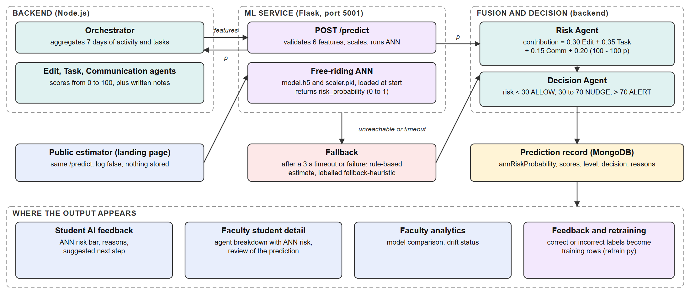
| Component | Responsibility | Technology |
|---|---|---|
| Orchestrator | Aggregates seven days of activity and tasks | Node.js |
| Rule-based agents | Edit, Task and Communication scores | Node.js |
| ANN service | Validates input, scales it, runs the network | Flask, TensorFlow |
| Risk Agent | Calls the service, fuses scores, applies fallback | Node.js, axios |
| Decision Agent | Allow, Nudge or Alert with reasons | Node.js |
| Prediction store | Persists probability, scores and feedback | MongoDB |
| Drift monitor | Compares live inputs with training data | Python, SciPy |
Six numbers travel to the service as JSON and one probability returns. No names, identifiers or free text are sent. The backend stores the probability and the six features with the prediction, and the service appends the features (without identifiers) to a local log used for drift checks unless the caller sets log to false.
The Risk Agent waits at most three seconds. If the call fails or times out, it computes a rule-based estimate from the same six features and marks the source as fallback-heuristic; the written reasons then say so. This keeps the pipeline available when the service is down, at the cost of silently different behaviour unless the label is read.
The service loads model.h5, scaler.pkl and feature_names.json once at start-up and refuses to start if they are missing. It exposes health, prediction, model information and drift endpoints (Table X).
Each prediction record keeps annRiskProbability and featuresUsed, which makes later audit and retraining possible. The React front end shows the value as the “ANN risk” bar and in the written reasons, and a public estimator on the landing page calls the same endpoint.
All services run locally: the service on port 5001, the API on 5000 and the Vite development server on 5173, which proxies the browser's /ann requests to the service. No cloud or container deployment exists (Section XIII).
No public dataset of team free-riding is available to the authors, so the network is trained on records from a seeded simulator (train_model.py, generator seed 42). Table VI lists the distributions. A latent effort score combines the features, noise is added, and the label is derived from the result:
| Feature | Distribution | Clipping |
|---|---|---|
| Tasks completed (%) | Normal(65, 25) | 0 to 100 |
| Document edits | Gamma(shape 2, scale 8) | at least 0 |
| Messages sent | Gamma(shape 2, scale 5) | at least 0 |
| Commits | Gamma(shape 1.8, scale 4) | at least 0 |
| Deadline adherence (%) | Normal(70, 22) | 0 to 100 |
| Active days | Normal(4.5, 2.2) | 0 to 7 |
The positive (at-risk) rate is 36.0%. The label depends on the features through a known formula, so the dataset measures how well a model recovers that formula under noise. It does not measure how well activity predicts real free-riding.
The data is split 80/20 with stratification (random_state 42) into 3,200 training and 800 test records. A StandardScaler is fitted on the training rows only and saved with the model, so inference applies identical scaling.
A small multilayer perceptron was chosen because the input is six dense numeric features, the target is a probability, and the model must load and answer quickly. ReLU hidden layers are the usual default [13]; the output uses a sigmoid so that it can be read as a probability. Dropout of 0.2 after the first hidden layer regularises training [16]. At 257 parameters the model is small relative to 3,200 training rows. The design was not tuned by search: layer sizes were fixed in advance, which is a limitation noted in Section XV.
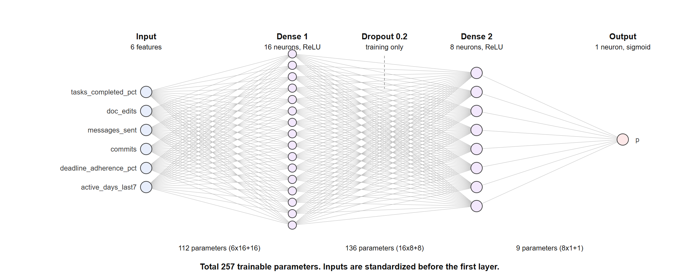
| Item | Value |
|---|---|
| Layers | Input(6), Dense(16, ReLU), Dropout(0.2), Dense(8, ReLU), Dense(1, sigmoid) |
| Parameters | 257 (112, 136 and 9 per layer) |
| Initialisation | Keras default (Glorot uniform) [14] |
| Optimiser, loss | Adam (library default settings), binary cross-entropy |
| Batch size, epochs | 32, maximum 100 |
| Validation | 15% of training rows |
| Early stopping | Monitor validation loss, patience 8, restore best weights |
| Stopped at | 38 epochs (deployed run) |
| Random seed | Not set for TensorFlow in the training script |
The training script does not fix TensorFlow's random seed, so each run produces slightly different weights. This is why the report includes a five-seed study (Section IX-F) in addition to the stored result.
Accuracy, precision, recall, F1 and ROC-AUC [20] are computed on the held-out test set at the 0.5 threshold, with a confusion matrix. Additional analyses are: a threshold sweep; calibration by ten equal-width bins, expected calibration error (ECE) and the Brier score [21]; permutation importance as the drop in AUC when one feature is shuffled [23]; one-feature sensitivity curves with the others at their training medians; robustness to Gaussian noise added to standardized inputs; and five retrainings with seeds 0 to 4.
The network is compared with the four classical models from the project's comparison pipeline, with a majority-class predictor, and with the labelling formula applied directly. The fused-score ablation recomputes each demonstration student's contribution without the network term, re-weighting the remaining weights (0.30, 0.35, 0.15) to sum to one, and compares decisions.
The fallback uses Eq. (4) with the six features (risk = 1 − latent). Because this is the same expression that generated the labels, it is a strong stand-in in the simulated setting, a point taken up in Section XIV.
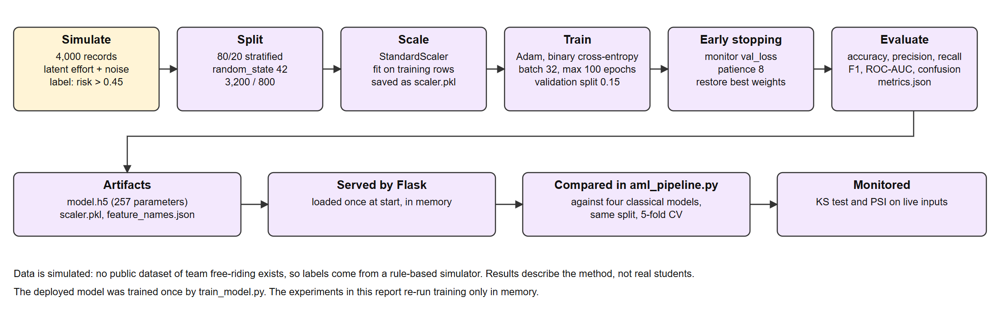
| Layer | Technology | Version or note |
|---|---|---|
| Neural network | TensorFlow (Keras), CPU build | 2.16.1 |
| Preprocessing, baselines | scikit-learn, NumPy, pandas | 1.5.1, 1.26.4, 2.2.2 |
| Serving | Flask, flask-cors, joblib | 3.0.3, 4.0.1, 1.4.2 |
| Language | Python | 3.11.9 |
| Backend caller | Node.js, Express, axios | Risk Agent in riskAgent.js |
| Front end | React, Vite | Landing estimator and portal screens |
| Plots | Matplotlib, SciPy | 3.9.2, 1.13.1 |
| File | Purpose |
|---|---|
ann-service/train_model.py | Simulate data, train, evaluate, save model, scaler, metrics |
ann-service/predict_service.py | Flask API: health, predict, model info, drift |
backend/src/agents/riskAgent.js | Call the service, fusion formula, fallback |
backend/src/agents/orchestrator.js | Build the six features from activity and tasks |
ann-service/aml_pipeline.py | Compare with four classical models, versioned registry |
ann-service/drift_monitor.py | KS test and PSI of live inputs |
ann-service/retrain.py | Append faculty-labelled rows, retrain |
ann-service/ann_experiments.py | Experiments in this report |
ann-service/ann_service_checks.py | Service checks, latency, ablation |
ann-service/ann_latency.py | In-process latency |
| Method and path | Behaviour |
|---|---|
| GET /health | Reports whether the model is loaded |
| POST /predict | Six features in, probability out; 400 on missing or non-numeric input; optional log flag |
| GET /model/info | Metrics, five-model comparison, importance, registry |
| GET /model/drift | KS and PSI per feature once at least 10 requests are logged |
The Risk Agent posts the six features with a three-second timeout. On success it records the probability with source ann; on any failure it computes the fallback and records fallback-heuristic. The orchestrator appends a written reason of the form “ANN model estimates 97.0% risk probability (ann)”. This text appeared in the running application (Section XI), and fallback values were observed during development whenever the service had not yet started.
dataset.csv (4,000 rows).model.h5, scaler.pkl, metrics.json, feature_names.json.aml_pipeline.py to compare with classical models.Faculty mark a prediction correct or incorrect. The export endpoint turns each review into a labelled row (a confirmed prediction keeps its label; a rejected one flips it), and retrain.py appends the rows and retrains. The export and the label flip were exercised during development; retrain.py itself was not executed for this report.
The evaluation asks six questions: does the stored result reproduce; how well does the network separate classes; are its probabilities calibrated; how stable is training; is the network better than simpler alternatives; and how does the running service behave.
| Feature | Normal | At risk | Std. dev. (all) |
|---|---|---|---|
| Tasks completed (%) | 71.24 | 50.18 | 23.19 |
| Document edits | 18.34 | 11.72 | 11.29 |
| Messages sent | 11.26 | 8.22 | 7.25 |
| Commits | 8.07 | 5.69 | 5.30 |
| Deadline adherence (%) | 71.65 | 64.52 | 20.60 |
| Active days | 4.47 | 4.21 | 1.91 |
The dataset has 4,000 rows (3,200 train, 800 test) with an at-risk rate of 36% on the test set, so a majority-class predictor scores 64% accuracy.
Experiments ran on Windows-10-10.0.26200-SP0 with an Intel64 Family 6 Model 186 Stepping 2, GenuineIntel processor, Python 3.11.9, TensorFlow 2.16.1 (CPU) and scikit-learn 1.5.1. The deployed model and scaler were loaded read-only. Retraining for the seed study ran in memory and did not modify any deployed file. The machine was shared with other processes, which affects latency figures.
Baselines are logistic regression, random forest, gradient boosting and a scikit-learn MLP (from aml_pipeline.py, five-fold cross-validated, tuned by grid search where applicable), a majority-class predictor, and the labelling formula.
Accuracy, precision, recall, F1 and ROC-AUC; ECE and Brier score; permutation importance; sensitivity curves; and mean and standard deviation across seeds. Latency is reported as median and 95th percentile.
Twelve scripted service checks are listed in Section X. The tests were written for this report; no earlier executed test suite for the ANN exists.
All comparisons use one data split and one simulator. The network's cross-validated score was not computed, so network and baselines are compared on test metrics only.
The stored network scores accuracy 0.836, precision 0.761, recall 0.795, F1 0.778 and ROC-AUC 0.899 on 800 test records. Reloading the model and scaler and scoring the same split reproduces every value exactly (maximum difference 0). The confusion matrix (Fig. 4a) has 440 true negatives, 72 false positives, 59 false negatives and 229 true positives. The network therefore catches 80% of at-risk records and flags 14% of normal ones. The 64% majority-class accuracy is the floor that accuracy must beat.
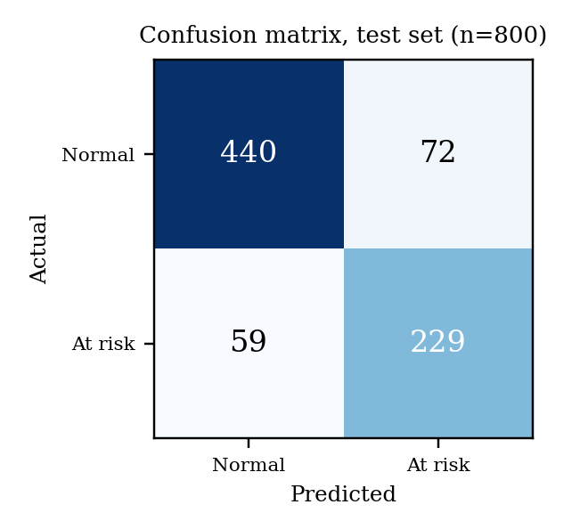
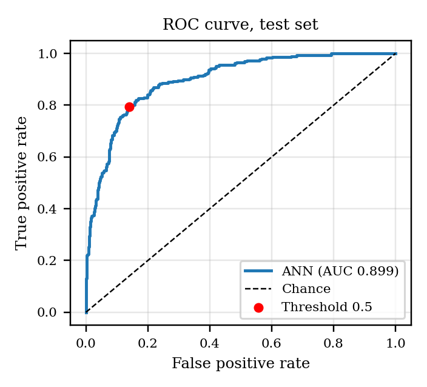
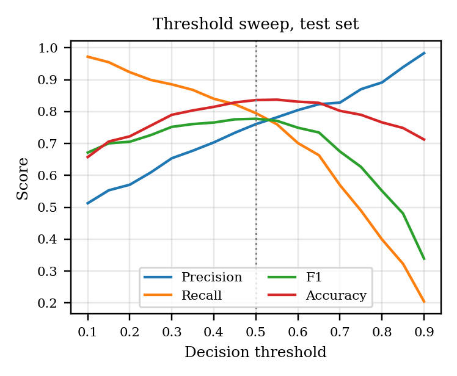
Recall rises and precision falls as the threshold falls (Table XII). F1 is highest at 0.5 (0.778), so the default threshold is also the F1-optimal one on this data. If missing a free-rider is judged worse than a false flag, a lower threshold such as 0.3 raises recall to 89% at a precision of 65%. In deployment the probability is fused rather than thresholded, so this trade-off applies mainly to the public estimator bands.
| Threshold | Precision | Recall | F1 | Accuracy |
|---|---|---|---|---|
| 0.30 | 0.654 | 0.885 | 0.752 | 0.790 |
| 0.40 | 0.703 | 0.840 | 0.766 | 0.815 |
| 0.50 | 0.761 | 0.795 | 0.778 | 0.836 |
| 0.60 | 0.805 | 0.701 | 0.750 | 0.831 |
| 0.70 | 0.828 | 0.569 | 0.675 | 0.802 |
The expected calibration error is 0.042 and the Brier score 0.122. The reliability curve (Fig. 7a) follows the diagonal at the extremes (4% predicted against 3% observed in the lowest bin; 94% against 98% in the highest) but over-states risk in the middle: the bins predicted at 25% to 45% had observed rates of 14% to 30%. Calibration was not corrected; calibration methods for networks are discussed by Guo et al. [22].
| Model | CV F1 | Test acc. | Test F1 | Test AUC |
|---|---|---|---|---|
| LogisticRegression | 0.735 | 0.826 | 0.761 | 0.894 |
| RandomForest | 0.719 | 0.814 | 0.736 | 0.878 |
| GradientBoosting | 0.741 | 0.820 | 0.748 | 0.892 |
| MLP (sklearn) | 0.743 | 0.825 | 0.763 | 0.895 |
| ANN (Keras, deployed) | not computed | 0.836 | 0.778 | 0.899 |
| Labelling formula (Eq. 4) | n/a | 0.831 | 0.761 | 0.899 |
| Majority class | n/a | 0.640 | n/a | 0.500 |
The network's AUC (0.899) is above the four classical models (0.878 to 0.894), but by margins of about 0.004 to 0.021. More importantly, the labelling formula applied directly reaches AUC 0.899, essentially identical to the network. Since the labels come from that formula plus noise, the noise sets a ceiling and the network has reached it. The comparison supports the conclusion that the network learned the simulator's rule; it does not show an advantage on real data, where the true rule is unknown. This is consistent with reports that simple models are competitive on small tabular data [8], [9].
In the re-run with seed 0 (Fig. 5) validation loss tracks training loss closely, ending at 0.390 against 0.379, so overfitting is small. Early stopping ended the five runs after 26 to 96 epochs (mean 54), a wide range caused by a flat validation curve. Test AUC across the five seeds is 0.8976 ± 0.0015 (range 0.8949 to 0.8984); F1 is 0.773 ± 0.007 and accuracy 0.832 ± 0.004. The deployed model's AUC (0.8987) is slightly above the best of the five re-runs, which is within what random initialisation can produce. Differences between seeds are smaller than the gap to the weakest baseline but comparable to the gap to the best baselines, so only a small and unproven advantage over logistic regression is supported.
| Seed | Epochs | Accuracy | F1 | AUC |
|---|---|---|---|---|
| 0 | 71 | 0.834 | 0.771 | 0.8983 |
| 1 | 26 | 0.839 | 0.783 | 0.8982 |
| 2 | 32 | 0.828 | 0.764 | 0.8949 |
| 3 | 96 | 0.830 | 0.774 | 0.8981 |
| 4 | 45 | 0.833 | 0.771 | 0.8984 |
| Mean ± SD | 54 ± 29 | 0.832 ± 0.004 | 0.773 ± 0.007 | 0.8976 ± 0.0015 |
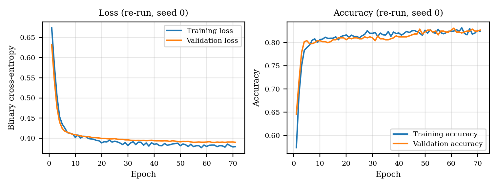
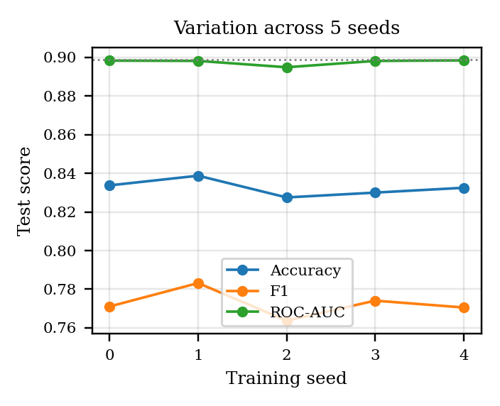
Shuffling task completion lowers AUC by 0.182, document edits by 0.110, commits by 0.059, messages by 0.040, deadline adherence by 0.037 and active days by 0.007 (Fig. 7b). The ranking matches the project's scikit-learn MLP (task 0.167, edits 0.107), and follows the simulator's weights: task completion has the largest weight (0.30) and active days the smallest (0.05). Importance therefore reflects the simulator, and says nothing about real behaviour.
| Feature | AUC drop (mean) | SD |
|---|---|---|
| Tasks completed (%) | 0.182 | 0.015 |
| Document edits | 0.110 | 0.009 |
| Commits | 0.059 | 0.007 |
| Messages sent | 0.040 | 0.006 |
| Deadline adherence (%) | 0.037 | 0.006 |
| Active days | 0.007 | 0.002 |
Varying one feature at a time from its 5th to 95th percentile, with the others at their training medians (Fig. 6), the predicted risk falls monotonically for all six features (Table XVI). The response is steepest for task completion (0.88 to 0.04) and shallowest for active days (0.45 to 0.19). This is the expected direction: more effort never raises the estimated risk.
| Feature | p at 5th | p at 95th | Non-increasing |
|---|---|---|---|
| Tasks completed (%) | 0.88 | 0.04 | Yes |
| Document edits | 0.69 | 0.05 | Yes |
| Messages sent | 0.52 | 0.04 | Yes |
| Commits | 0.55 | 0.06 | Yes |
| Deadline adherence (%) | 0.58 | 0.08 | Yes |
| Active days | 0.45 | 0.19 | Yes |
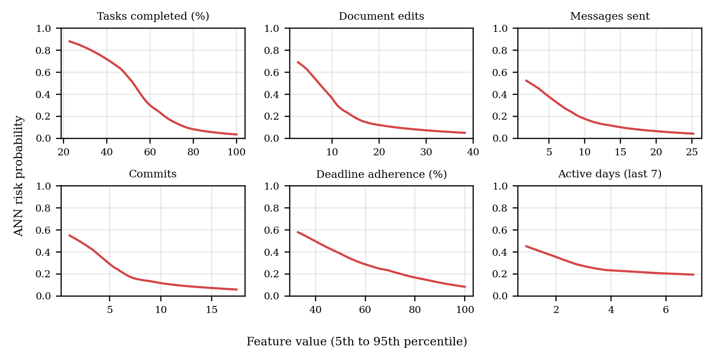
Adding Gaussian noise to standardized test inputs degrades discrimination gradually (Fig. 7c): AUC is 0.896 at 0.1 SD, 0.880 at 0.25 SD, 0.837 at 0.5 SD and 0.752 at 1.0 SD, against 0.899 without noise. Small measurement error (for example a miscounted commit) therefore changes little, while large errors cost accuracy.
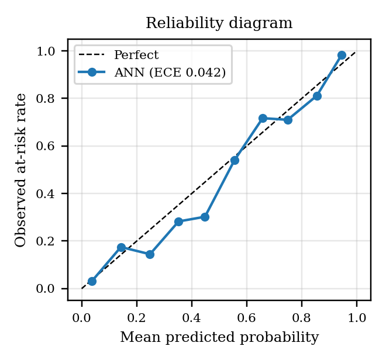
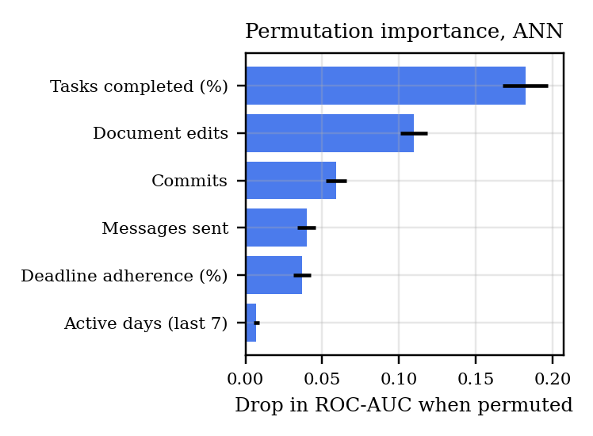
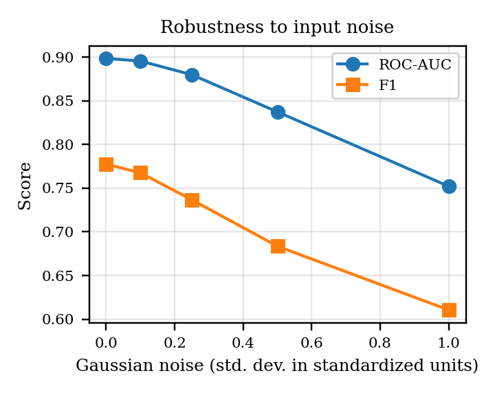
Table XVII shows the cost of inference. A direct model call takes about 11 ms, whereas Keras predict on one sample takes about 236 ms because of its per-call setup. The HTTP service, which uses predict, answered in 220 ms median and 437 ms at the 95th percentile. These are well inside the 3 s client timeout, but most of the time is framework overhead rather than computation. An earlier measurement taken while other processes were running gave 121 ms for predict and 6.5 ms for a direct call, so absolute values vary on this shared machine.
| Measurement | Median (ms) | p95 (ms) |
|---|---|---|
| model.predict, 1 sample (in process) | 236 | 720 |
| model(x), 1 sample (in process) | 10.6 | 29.7 |
| model.predict, 800 samples | 270 | 512 |
| POST /predict over HTTP (100 requests) | 220 | 437 |
For the nine demonstration students, removing the network term and re-weighting the rest shifts the contribution score by 4.8 points on average (maximum 7), and changes the risk level for 2 of 9 (Table XVIII). The change is largest where the network disagrees with the rule-based agents: the student with a 97% network probability moves from a Nudge-level score to an Alert. With nine simulated students this shows how the term works, not how often it matters.
| Student | ANN p | With ANN | Without | Level with | Level without |
|---|---|---|---|---|---|
| Dharun | 0.002 | 87 | 84 | LOW | LOW |
| Arun | 0.035 | 70 | 63 | MEDIUM | MEDIUM |
| Priya | 0.906 | 39 | 46 | MEDIUM | MEDIUM |
| Karthik | 0.027 | 74 | 68 | LOW | MEDIUM |
| Meena | 0.970 | 27 | 33 | HIGH | MEDIUM |
| Sanjay | 0.000 | 95 | 93 | LOW | LOW |
| Divya | 0.005 | 83 | 79 | LOW | LOW |
| Naveen | 0.003 | 84 | 81 | LOW | LOW |
| Rekha | 0.986 | 21 | 26 | HIGH | HIGH |
No automated unit-test suite for the ANN existed before this study. The evidence in this section comes from scripts written for the report: the metric reproduction (Section IX-A) and twelve service checks run against the live service on 2026-10-07. Unit tests of the training code, concurrency tests, authentication tests and load tests were not performed.
Reloading model.h5 and scaler.pkl and scoring the stored test split reproduced accuracy, precision, recall, F1 and ROC-AUC with a maximum absolute difference of 0, confirming that the deployed artifacts match the stored metrics and that the split is regenerable from random_state 42.
Table XIX lists the twelve checks, their expected results and what was observed.
| ID | Component | Test case | Expected result | Actual result | Status |
|---|---|---|---|---|---|
| S1 | Service | Health endpoint | 200, model_loaded true | 200, {'model_loaded': True, 'status': 'ok'} | Pass |
| S2 | Service | Valid request returns probability and metadata | 200, p in [0,1], four keys | 200, keys ['features_used', 'model_version', 'risk_percent', 'risk_probability'] | Pass |
| S3 | Service | Missing features | 400 with the list of expected features | 400, error mentions expected features: True | Pass |
| S4 | Service | Non-numeric value | 400 | 400 | Pass |
| S5 | Service | Empty request body | Rejected (4xx or 5xx), not a prediction | 400 | Pass |
| S6 | Service | Out-of-range values | Documented behaviour (no range validation) | out-of-range inputs accepted: 200 p=0.0, 200 p=0.0 | Gap found |
| S7 | Service | Determinism | Same input gives the same output | 1 distinct value over 5 calls: [0.9994] | Pass |
| S8 | Service | Risk falls as task completion rises | Non-increasing | [0.9997, 0.9987, 0.9954, 0.9844, 0.9485] | Pass |
| S9 | Service | Low activity scores riskier than high activity | p(low) > p(high) | low-activity 0.9994, high-activity 0.0015 | Pass |
| S10 | Service | Drift log writes only when logging is on | +0 with log false, +1 by default | lines 155 to 155 (log false), then 156 (default) | Pass |
| S11 | Service | Model info | 200, five models, n_test 800 | 200, 5 models, n_test 800 | Pass |
| S12 | Service | Drift endpoint | 200 with a valid status | 200, status drift_detected, samples 156 | Pass |
All twelve checks completed as expected. Check S6 is a documentation test: the service accepts inputs far outside the valid range (for example a negative task percentage or a billion commits) and returns a probability, so range validation is missing. It is labelled a gap rather than a pass.
The end-to-end path (backend to service to stored prediction to screen) was observed in the running application: the stored probability and the “ANN” label appeared on the student and faculty screens (Section XI), and the ablation table in Table XVIII was built from records produced by that path. The broader API script for the platform was not part of this study and its results are not reported.
Missing and non-numeric features return HTTP 400 with the expected feature names; an empty body returns 400. Out-of-range values are accepted (S6). When the service is down the backend uses the fallback; this behaviour was seen during development but was not re-tested here by stopping the service.
The ANN output appears on four screens. In each, the value is shown alongside rule-based scores and written reasons rather than alone.
Purpose: show a student how the score was reached. User: student. The screen lists the edit, task and communication scores and an “ANN risk” bar (the probability × 100), the written reasons including “ANN model estimates 97.0% risk probability (ann)”, and a suggested next step. The values shown are those of a demonstration student (Fig. 8).
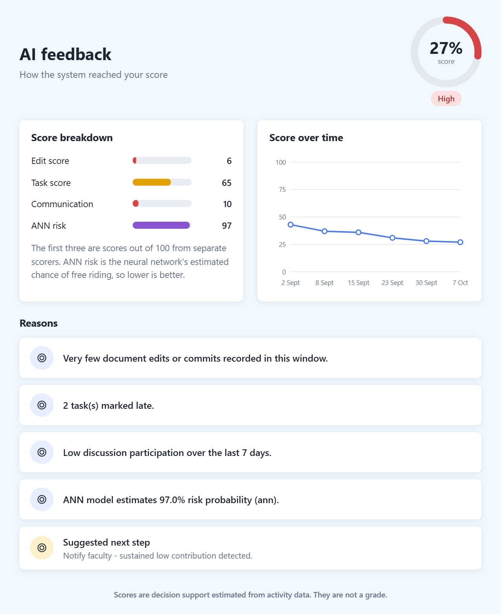
Purpose: let faculty inspect and review a prediction. User: faculty. The agent breakdown shows the same four bars, the contribution ring, the written reasons, a trend chart, and buttons to mark the prediction correct or incorrect (Fig. 9). These reviews are the source of retraining labels.
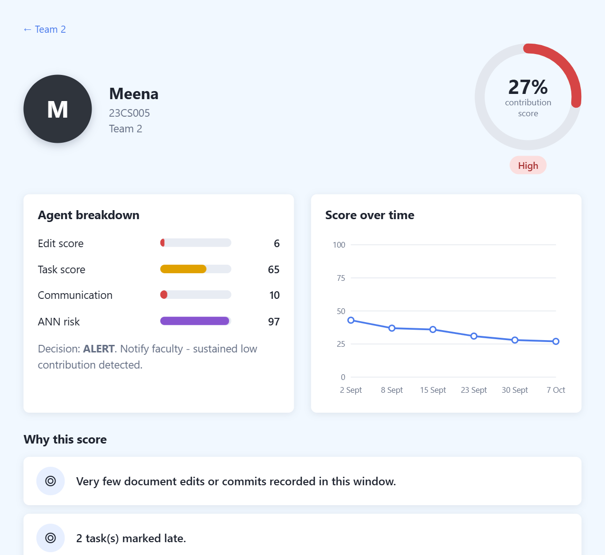
Purpose: compare the deployed network with the other models and show drift status. The panel lists test ROC-AUC for five models with the network highlighted (Fig. 10). The drift line reports that live inputs differ from the training data for all six features. This reflects the demonstration data (seeded totals and a log that accumulates across sessions), not real drift.
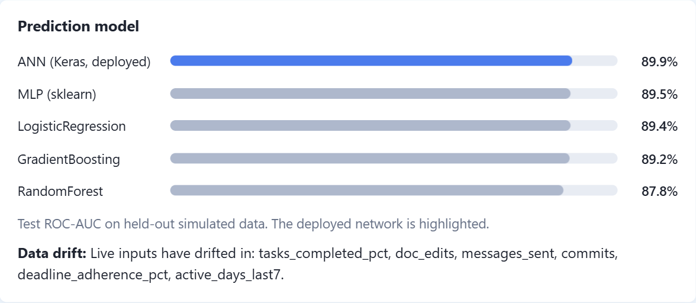
Purpose: let a visitor try the network. User: any visitor. The form takes six numbers with validation, calls the service with logging disabled, and shows the probability, a band and a meter with marks at 30 and 70 (Fig. 11). A very high probability (here 0.9994) is displayed as 100%, so the rounded display hides the difference between 99.9% and 100%.
| Area | Current state | Assessment |
|---|---|---|
| Data sent | Six numbers, no identifiers or free text | Good |
| Prediction log | Features appended to a local file unless log is false; no identifiers | Accumulates across sessions; no rotation |
| Public estimator | Sends log false; nothing stored | Good |
| Service authentication | None; any caller that can reach port 5001 can predict or read model information | Gap |
| Cross-origin access | Open (flask-cors defaults) | Gap for deployment |
| Input validation | Types checked, ranges not checked | Gap (check S6) |
| Model artifacts | Local files, version from modification time, no integrity check | Gap |
| Human oversight | Output is one input to a decision; faculty can mark it wrong | Implemented |
| Fairness | Not evaluated; no demographic data used or tested | Not done |
| Policy text | Privacy policy and terms are drafts | [TO BE PROVIDED] |
The network never sees names, emails or register numbers. The main risks are exposure of the unauthenticated service beyond localhost and trust in a probability that comes from a simulated training set. The decision remains advisory: faculty can review each prediction, and the interface states that scores are not grades. Doshi-Velez and Kim stress that interpretability claims need evaluation [25]; here the written reasons and importance analysis are explanations of the model's behaviour on simulated data, not validated explanations of real effort.
| Item | Actual or status |
|---|---|
| Operating system | Windows-10-10.0.26200-SP0 |
| Processor | Intel64 Family 6 Model 186 Stepping 2, GenuineIntel (CPU only) |
| Python, TensorFlow | 3.11.9, 2.16.1 |
| Ports | 5001 (service), 5000 (API), 5173 (UI) |
| Configuration | ANN_SERVICE_URL for the backend; default http://127.0.0.1:5001 |
| Start-up | Train once (train_model.py), then predict_service.py; loading takes about 25 s |
| Web server | Flask development server |
| Hosting and cloud | None; local only |
| Containers | Not used |
| Production plan | [TO BE PROVIDED] |
The deployment described here is a development setup. For production the service would need a production WSGI server, authentication, input validation, model versioning by content hash, monitoring and a restart policy. These are future work, not present features.
Main finding. The network is faithful to its training data and nothing more: it reproduces exactly, trains stably across seeds, behaves monotonically and tolerates small noise, and its AUC equals that of the formula that produced the labels. In this setting its performance is bounded by label noise, so the numbers cannot rank it against alternatives that also reach the ceiling.
What the network adds. Against the four classical models its margin is small (about 0.004 to 0.005 AUC over logistic regression and the scikit-learn MLP), and the labelling formula, which is also the system's fallback, matches it. In the simulated world the network adds no measurable value over the rule it imitates. Its value could appear only if real effort relates to activity in ways the rule does not capture, which requires real labelled data. The ablation shows that the 20% weight does change decisions for some students, but a rule-based term would change them too.
Trade-offs. A neural model was chosen to learn non-linear combinations without hand-written weights, at the cost of a service, a model file, a slower call path and weaker transparency than a formula. That is consistent with the literature that favours simple or tree-based models for small tabular problems [8], [9]. The design is still reasonable as a platform: a learned estimator can be retrained on real feedback without changing the pipeline.
Calibration. The error of 0.042 is modest but concentrated in the middle range, where the network over-states risk. Because the fused score uses the probability linearly, this inflates risk slightly for mid-range students.
Engineering observations. Request time is dominated by Keras call overhead; calling the model directly would cut single-sample time by roughly an order of magnitude. The service's lack of range validation lets nonsensical inputs return confident answers. These are cheap to fix and matter more than model changes at this stage. They illustrate the point that a deployed model carries maintenance and operational costs beyond training [27].
Comparison with existing approaches. Peer assessment gives a late, subjective signal; the network gives an early, objective but unvalidated one. The two are complementary, and the system keeps faculty review in the loop.
predict; fix the random seed and save a content hash with the model; rotate the drift log.The ANN component estimates free-riding risk from seven days of activity using a 257-parameter feed-forward network served by a Flask microservice and fused into an explainable Allow, Nudge or Alert decision, with a rule-based fallback. On simulated data it reaches accuracy 0.836 and ROC-AUC 0.899, reproduces exactly from stored artifacts, varies by only ±0.0015 AUC across retrainings, behaves monotonically and tolerates small noise. Its performance equals that of the labelling formula and is within about 0.02 AUC of classical baselines, so the evidence supports a faithful and well-integrated implementation, not a demonstration of real-world detection. Gaps in validation, authentication, calibration and latency are identified with clear fixes. The next step is real labelled data; until then the output should be used only as one advisory input reviewed by faculty.
The authors thank [FACULTY GUIDE], the [DEPARTMENT] and [INSTITUTION] for guidance and facilities. [OTHER ACKNOWLEDGEMENTS, IF ANY]
From the project root, with the Python environment of ann-service activated:
python train_model.py: simulate, train, save artifacts and metrics (do not rerun if the stored model must be preserved).python ann_experiments.py: all analyses in Section IX; writes report/ann/ann_experiments.json and figures.python predict_service.py then python ann_service_checks.py: service checks, HTTP latency and ablation (needs the backend for the ablation).python ann_latency.py: in-process latency.node report/ann/build-report.js: regenerate this report from the result files.| Topic | Project note | Implementation (used here) |
|---|---|---|
| Input features | Meaningful commits and activity time | Commit counts and active days; recorded active minutes are unused by the network |
| Label source | Instructor or time-stamped proof of work | Simulator labels only |
| Scope of AI | LLM and retrieval layers mentioned for the wider course | None in the ANN component |
| Network comparison | Deployed ANN listed with classical models | ANN has test metrics only; classical models also have cross-validated scores |
| Training seed | Not specified | No TensorFlow seed in the script; seed study added |
| Drift status | Interface reports drift | Reflects a log accumulated across demonstration sessions |
| Probability display | Percent shown to users | Rounded (0.9994 shown as 100%) |
ANN: artificial neural network. AUC: area under the ROC curve. ECE: expected calibration error. Free-riding: contributing less than a fair share to team work. Fusion: weighted combination of agent scores and the network probability. PSI: population stability index. KS test: Kolmogorov–Smirnov test. Fallback: rule-based estimate used when the service is unreachable.